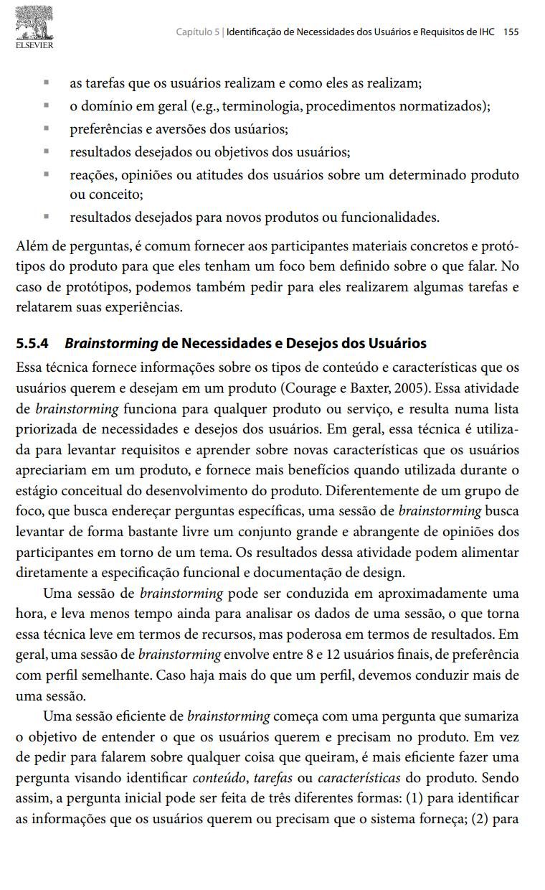
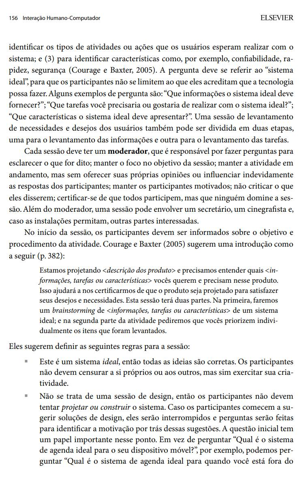
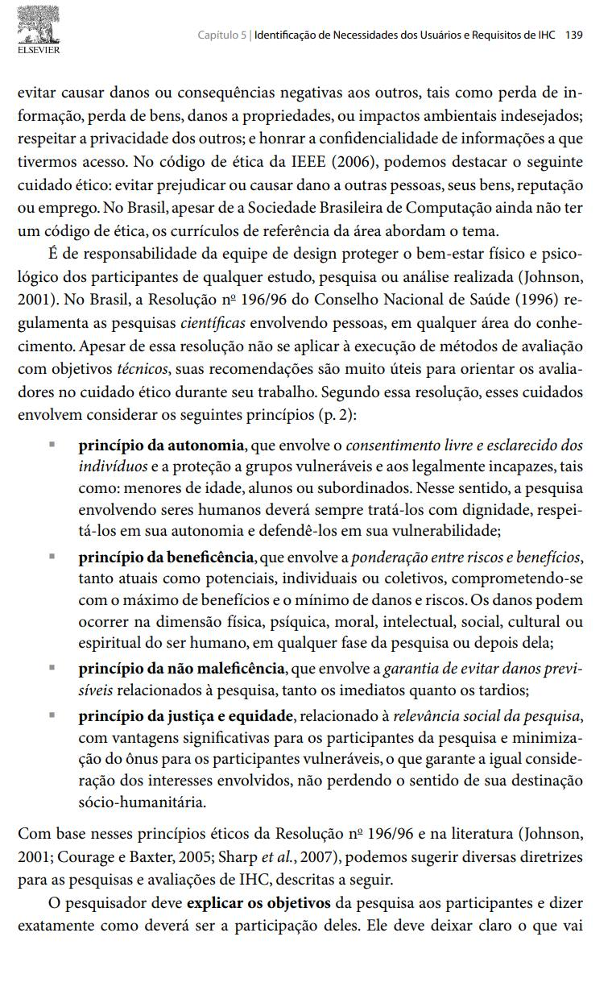
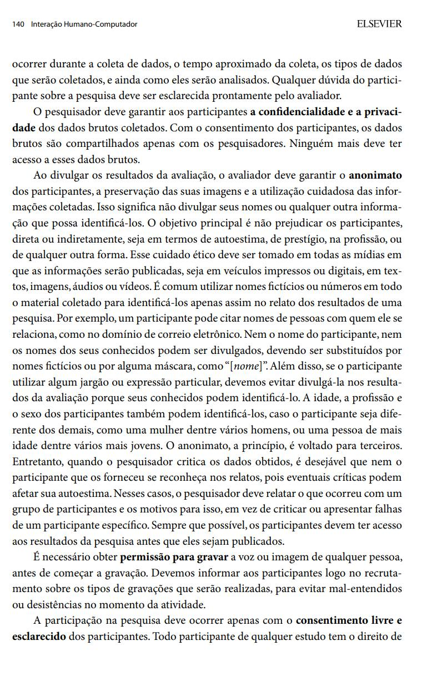
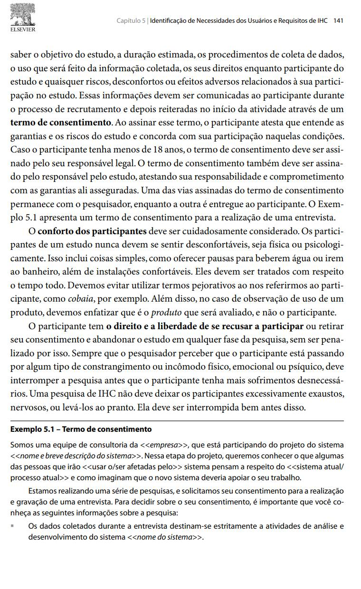

2. Coleta por brainstorming e aspectos éticos
Autor: Victor Andreozzi de La Rocque Couto · Revisor: Felipe Lopes Pedroza
Entrega: 2, Perfil do Usuário, Personas e Análise de Tarefas (parte individual, feita em 27/11/2026 a partir dos artefatos que Victor elaborou na Entrega 2 e na Entrega 5) · Funcionalidade de Victor no projeto: Avaliação de Disciplinas
Outros artefatos desta parte: 1. Visão geral e planejamento · 3. Perfil de usuário · 4. Persona Talita Farias · 5. Cenário da Avaliação de Disciplinas · 6. HTA da Avaliação de Disciplinas · 7. CTT da Avaliação de Disciplinas · 8. Verificação com as listas
1. Introdução
Nesta parte, cada integrante define o perfil de usuário com uma técnica diferente de coleta de dados. A técnica de Victor é o brainstorming de necessidades e desejos dos usuários, descrita em Barbosa e Silva (2010, p. 155–156). Esta página registra como a sessão foi planejada e conduzida, a lista priorizada de ideias que ela produziu e os cuidados éticos tomados com os participantes. O perfil de usuário que sai desses dados está em 3. Perfil de usuário.
A sessão aconteceu em 25/09/2026, com 10 estudantes da UnB, e foi conduzida por Felipe, Matheus e Victor. A gravação da sessão é a fonte dos dados desta página. Os participantes são identificados apenas pelos códigos P01 a P10.
2. A técnica no livro
Segundo o livro, o brainstorming levanta “de forma bastante livre” as opiniões dos participantes sobre um tema e resulta numa lista priorizada de necessidades e desejos (Barbosa e Silva (2010, p. 155). A sessão dura cerca de uma hora, envolve de 8 a 12 usuários de perfil semelhante e começa com uma pergunta sobre o “sistema ideal” (p. 155–156). A Figura 1 e a Figura 2 mostram esses trechos.

Fonte: BARBOSA, S. D. J.; SILVA, B. S. Interação Humano-Computador. Rio de Janeiro: Elsevier, 2010. Página: 155, Capítulo 5. Identificação de Necessidades dos Usuários e Requisitos de IHC, seção 5.5.4.

Fonte: BARBOSA, S. D. J.; SILVA, B. S. Interação Humano-Computador. Rio de Janeiro: Elsevier, 2010. Página: 156, Capítulo 5. Identificação de Necessidades dos Usuários e Requisitos de IHC, seção 5.5.4.
3. Planejamento e condução da sessão
A Tabela 4 compara o que o livro recomenda com o que foi feito na sessão. Onde a sessão se afastou da recomendação, a última coluna registra o desvio.
| Aspecto | Recomendação do livro (p. 155–156) | O que foi feito em 25/09/2026 |
|---|---|---|
| Objetivo | Levantar informações, tarefas ou características que os usuários querem no produto | Levantar o que os estudantes sentem falta no NoFluxo UnB e o que os ajudaria no dia a dia acadêmico |
| Participantes | De 8 a 12 usuários finais de perfil semelhante | 10 estudantes da UnB (P01 a P10), usuários potenciais do NoFluxo UnB, abordados durante a Semana Universitária (SEMUNI) da UnB, no campus Darcy Ribeiro; na gravação aparecem estudantes de Medicina Veterinária. Só um participante era conhecido de um dos integrantes do grupo, sem proximidade |
| Papéis | Um moderador; podem participar secretário e cinegrafista | Sessão conduzida por Felipe, Matheus e Victor, que apresentaram o sistema, fizeram as perguntas e gravaram a sessão |
| Introdução | Informar o objetivo e o procedimento da atividade | Apresentação do NoFluxo UnB e exploração livre no celular, no modo visitante, sem login obrigatório |
| Pergunta inicial | Pergunta sobre o “sistema ideal”, para que os participantes não se limitem ao que a tecnologia já faz | “Quais informações vocês acham necessárias que estejam presentes na página? O que vocês estão sentindo falta?” Desvio: a pergunta partiu do sistema atual, não do sistema ideal |
| Levantamento | Ideias livres, sem crítica nem censura | Ideias faladas em voz alta e, depois, cada participante escreveu até cinco itens no verso de uma folha |
| Priorização | Os participantes priorizam individualmente os itens levantados | Desvio: não houve votação; as ideias foram priorizadas pela recorrência, isto é, pelo número de vezes em que apareceram na sessão (Tabela 5) |
| Encerramento | Não especificado | Rodada final em que cada participante disse, em poucas palavras, o que achou do site |
| Duração e registro | Cerca de uma hora | Cerca de 29 minutos, gravados em vídeo com o consentimento dos participantes |
Fonte: Victor Andreozzi de La Rocque Couto (2026).
4. Lista priorizada de necessidades e desejos
A Tabela 5 traz as ideias levantadas pelos participantes, em ordem de recorrência. A contagem foi feita na transcrição automática da gravação: cada ideia conta uma vez por momento em que um participante a trouxe ou a retomou. Falas dos moderadores não entram na contagem.
| Prioridade | Necessidade ou desejo | Menções | Relação com o projeto |
|---|---|---|---|
| 1 | Os próprios estudantes avaliarem a dificuldade das disciplinas, para que o nível mostrado pelo sistema fique mais certo (um participante comparou a ideia a um “Letterboxd das disciplinas”). Os participantes questionaram como a dificuldade atual é calculada e disseram que ela estava errada em disciplinas que conheciam | 4 | Origem da funcionalidade Avaliação de Disciplinas, de Victor: nota de dificuldade dada por quem cursou |
| 2 | Comentários anônimos sobre a disciplina e o professor, porque a mesma disciplina pode ser fácil ou muito difícil conforme o professor | 4 | Avaliação de Disciplinas: nota de cobrança do professor e comentário anônimo |
| 3 | Apoio a estudantes transferidos: ver quais disciplinas de outra instituição são aproveitadas e registrar o aproveitamento para os próximos estudantes | 4 | Mudança de curso e aproveitamento (documento do grupo, TAR-09 da versão de setembro) |
| 4 | Simular o IRA do próximo semestre e saber quanto é preciso tirar para subir o índice | 3 | Simulador de IRA, de Matheus |
| 5 | Opção de fundo branco e de menor contraste, além do modo noturno | 2 | Ajustes de interface (Tabela 3 dos achados do grupo) |
| 6 | Espaço de conversa entre estudantes dentro do sistema, como um fórum da UnB | 2 | Registrado como sugestão; fora do escopo das funcionalidades individuais |
| 7 | A assistente de IA ajudar na mudança de curso e reorganizar a grade a pedido | 1 | Registrado como sugestão |
| 8 | Consultar o índice de reprovação das disciplinas | 1 | Registrado como sugestão; relaciona-se à prioridade 1 |
Fonte: Victor Andreozzi de La Rocque Couto (2026), a partir da gravação da sessão (transcrição automática do YouTube) e da Tabela 2 de 3. Achados da pesquisa com usuários.
As duas ideias mais recorrentes tratam da mesma necessidade: saber, antes da matrícula, o quanto uma disciplina é difícil e como o professor cobra, a partir da experiência de quem já a cursou. Essa necessidade é a base do perfil de usuário de 3. Perfil de usuário e das tarefas analisadas em 6. HTA da Avaliação de Disciplinas e 7. CTT da Avaliação de Disciplinas. No encerramento, os participantes descreveram o site como útil e disseram que preferem usá-lo a entrar no SIGAA.
5. Aspectos éticos
O livro orienta o cuidado ético pelos quatro princípios da Resolução nº 196/96 do Conselho Nacional de Saúde: autonomia, beneficência, não maleficência e justiça e equidade (Barbosa e Silva (2010, p. 139). A resolução não se aplica a métodos com objetivos técnicos, mas suas recomendações orientam o avaliador (p. 139). A Figura 3 mostra os princípios; a Figura 4 e a Figura 5 mostram as diretrizes sobre anonimato, permissão para gravar e consentimento livre e esclarecido.

Fonte: BARBOSA, S. D. J.; SILVA, B. S. Interação Humano-Computador. Rio de Janeiro: Elsevier, 2010. Página: 139, Capítulo 5. Identificação de Necessidades dos Usuários e Requisitos de IHC, seção 5.4.

Fonte: BARBOSA, S. D. J.; SILVA, B. S. Interação Humano-Computador. Rio de Janeiro: Elsevier, 2010. Página: 140, Capítulo 5. Identificação de Necessidades dos Usuários e Requisitos de IHC, seção 5.4.

Fonte: BARBOSA, S. D. J.; SILVA, B. S. Interação Humano-Computador. Rio de Janeiro: Elsevier, 2010. Página: 141, Capítulo 5. Identificação de Necessidades dos Usuários e Requisitos de IHC, seção 5.4.
A Tabela 6 mostra como cada princípio e cada diretriz foi aplicado na sessão de brainstorming. As seções citadas são as do Termo de Consentimento Livre e Esclarecido (TCLE) do grupo, descrito em Aspectos éticos da pesquisa com usuários.
| Princípio ou diretriz | Livro | Como foi aplicado na sessão |
|---|---|---|
| Autonomia | p. 139 | Cada participante assinou o TCLE antes da sessão, com consentimento separado para participar, para a gravação em áudio, para a gravação em vídeo e para o uso anonimizado dos dados (TCLE, seção 10) |
| Beneficência | p. 139 | Riscos mínimos (desconforto ao opinar sobre a própria trajetória) e benefício coletivo: as ideias voltam ao projeto, como mostra a Tabela 5 (TCLE, seções 4 e 5) |
| Não maleficência | p. 139 | Ninguém foi obrigado a falar ou a escrever; a sessão seria interrompida diante de desconforto (TCLE, seção 4) |
| Justiça e equidade | p. 139 | Participação sem remuneração e benefício voltado à comunidade estudantil; o convite incluiu estudantes em situações acadêmicas diferentes (TCLE, seções 1 e 5) |
| Permissão para gravar | p. 140 | A gravação foi autorizada no TCLE antes de começar, e os participantes sabiam da câmera desde o início da sessão (TCLE, seções 3 e 10) |
| Confidencialidade e anonimato | p. 140 | Os participantes aparecem nesta página só como P01 a P10, e os nomes ditos na gravação não são reproduzidos. A gravação está no YouTube como vídeo não listado: não aparece em buscas nem no canal, e só quem tem o link consegue assisti-la |
| Consentimento livre e esclarecido | p. 140–141 | O TCLE explica o objetivo, a duração, a gravação e o uso dos dados; os termos assinados ficam com a equipe e não são publicados |
| Direito de recusar e de desistir | p. 141 | O participante podia sair a qualquer momento, sem prejuízo (TCLE, seção 8) |
| Participantes vulneráveis (alunos) | p. 142 | Os participantes são estudantes, que é exatamente o perfil do NoFluxo UnB, caso que o livro admite |
Fonte: Victor Andreozzi de La Rocque Couto (2026).
6. Correções da inspeção
A inspeção de Felipe apontou a discrepância DI-01 (Item 7): o Apêndice A publica os links abertos das gravações, e os participantes não recebem código. Nesta página, os participantes passaram a ser identificados por código (P01 a P10), e os nomes ditos na gravação não são reproduzidos. A gravação não é pública: está no YouTube como vídeo não listado, que não aparece em buscas nem no canal e só pode ser assistido por quem tem o link.
7. Referências
- BARBOSA, Simone Diniz Junqueira; SILVA, Bruno Santana da. Interação Humano-Computador. Rio de Janeiro: Elsevier, 2010.
- GRUPO 02. Brainstorm (gravação da sessão de brainstorming de 25/09/2026). YouTube, 2026. Disponível em: <https://youtu.be/r89nhXXu1R0>. Acesso em: 27 nov. 2026.
- GRUPO 02. Entrega 2: Perfil do Usuário, Personas e Análise de Tarefas (documento do grupo, versões 1.0 a 1.10). Universidade de Brasília, 2026. Disponível em: <https://interacao-humano-computador.github.io/2026.2-Grupo02/entrega2.html>.
- PEDROZA, Felipe Lopes. Inspeção dos artefatos de Victor Andreozzi de La Rocque Couto (Entregas 2 a 7). Universidade de Brasília, 2026. Disponível em: <https://interacao-humano-computador.github.io/2026.2-Grupo02/docs/Grupo2InspecaoArtefatosVictorPorFelipe.pdf>.
- GRUPO 02. Lista de verificação geral dos artefatos de IHC: inspeção de artefatos pelo método de Fagan, versão 1.0. Universidade de Brasília, 2026; e Lista de verificação dos artefatos de IHC por entrega, versão 2.0. Universidade de Brasília, 2026.
Histórico de versão
| Versão | Data | Descrição | Autor(es) | Revisor(es) | Declaração de ferramenta de IA |
|---|---|---|---|---|---|
| 1.0 | 27/11/2026 | Parte individual da Entrega 2: coleta de dados por brainstorming (planejamento, condução e lista priorizada) e aspectos éticos da sessão | Victor Andreozzi de La Rocque Couto | Felipe Lopes Pedroza | Claude (Anthropic): leitura da transcrição automática do vídeo da sessão, contagem das menções, organização das páginas e das tabelas a partir dos artefatos de Victor na Entrega 2 e na Entrega 5 e captura das páginas do livro; a escolha da técnica, as decisões de projeto e as conclusões são do autor |